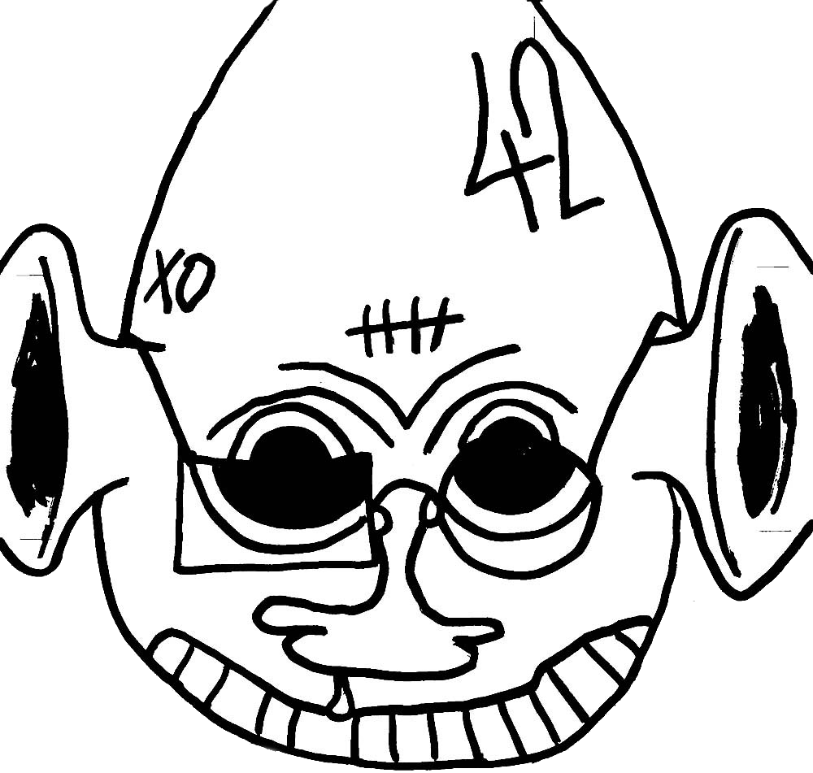

PROJETS
CONTACT
À PROPOS
INSTAGRAM
ARE.NA
WEBSITES
badger designed websites :
adambadger.net
shlagazine

serial cadavre excellent
other appearances :
omniscience -
Voitures Futures
postindustrial animism -
Meles Meles
postindustrial animism -
Sans Queue ni Tête
MCA -
3x60*80